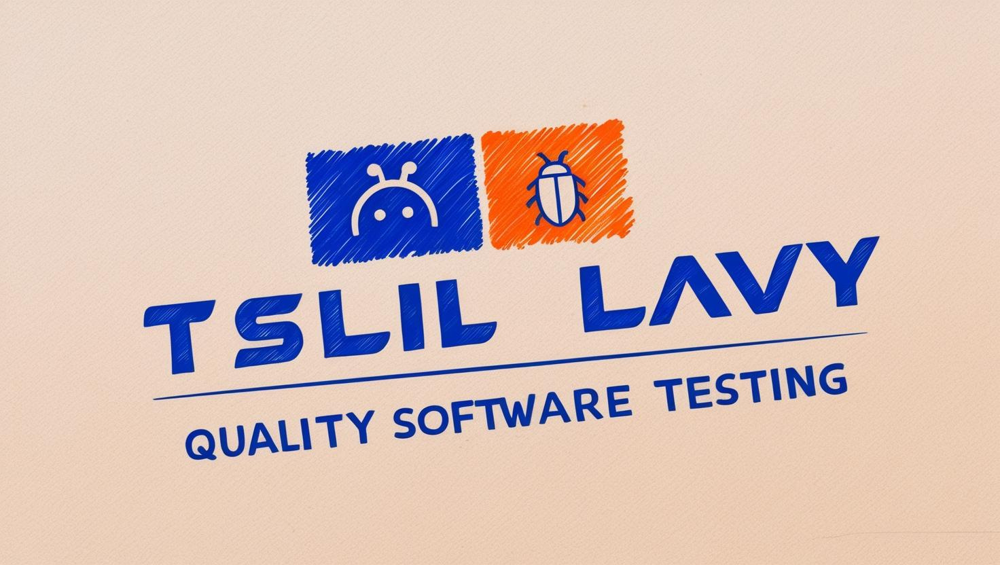

צליל לביא
בודק תוכנה

בודק תוכנה ידני מוסמך עם רקע ב-SQL ובדיקות אוטומטיות.
מחפש להשתלב בצוות מקצועי ולהביא ערך אמיתי דרך בדיקות איכותיות.
בודק תוכנה ידני מוסמך עם רקע ב-SQL ובדיקות אוטומטיות.
מחפש להשתלב בצוות מקצועי ולהביא ערך אמיתי דרך בדיקות איכותיות.
שלום! שמי צליל לביא, בודק תוכנה ידני מוסמך לאחר שסיימתי קורס ייעודי בתחום והוכשרתי לבצע בדיקות תוכנה יסודיות ומקיפות. בנוסף בא עם רקע ב-SQL ובדיקות אוטומטיות.
אני מעוניין להשתלב בתפקיד מאתגר ומעניין בו אוכל לתרום מיכולותיי ולרכוש ניסיון נוסף. אשמח להצטרף לצוות מנצח ולעבוד יחד להצלחת החברה.